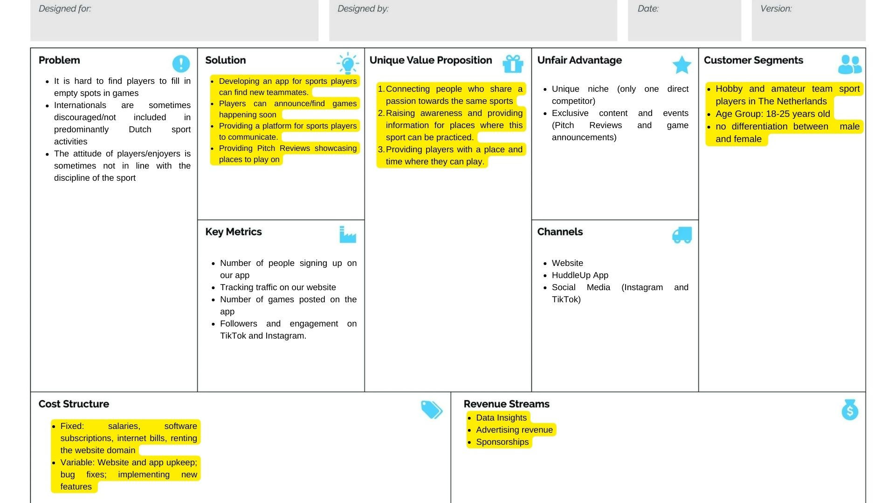

General Information
This branded website is publicly available at https://huddleupnl.github.io/HuddleUP.github.io/
This website was created by…
- Iarina Dragomirescu (ID: 220248)
- Hristyan Dimitrov (ID: 220090)
- Georgi Danchev (ID: 221401)
Content
| # | Student ID | Value | Name and link of content |
|---|---|---|---|
| 1. | Iarina Dragomirescu (220248) | Home Page- written all the copy on the Home Page | Home Page |
| 2. | Hristyan Dimitrov (220090) | Value 1
Everyone Can Play: A player’s past should never define their future. Everyone is welcome to huddle up and find a new team to play with, no matter your background and experiences. |
About Us- Value 1 |
| 3. | Georgi Danchev (221401) | Value 2
Thrill of the Game: The game should not only unite us but inspire us to show our passion for the sport. Experience with us the unimaginable heights of success and the heart-wrenching feeling of defeat. |
About Us- Value 2 |
| 4. | Iarina Dragomirescu (220248) | Value 3
Growing Together: There’s no I in Team, but there’s an I in WIN. Even if you build your own success, a good team environment is what fuels it. Connect with your teammates and make new friends with HuddleUp. |
About Us- Value 3 |
| 5. | Georgi Danchev (221401) & Iarina Dragomirescu (220248) | Vision | About Us |
| 5. | Iarina Dragomirescu(220248) | Our Journey/The Name/The Dream Team Sections | About Us |
| 5. | Iarina Dragomirescu(220248) | Huddle | Huddle Page |
Brand Name: HuddleUP
Explanation: Our name came from a simple question: what is something that brings all team players together? Is it the game itself? The sport? Well, it turned out to be something much more personal than that, something only a closely knit team would truly understand and value. Huddling together is what makes the team feel like a singular unit, something that brings all players together and connects them. “HuddleUp” is not only our name, but it is an invitation that we extend to all our users, we invite you all to huddle together and create your dream teams.
Brand Logo
Our logo is made up of two different elements: the two boxing gloves and our brand's name. The boxing gloves are in fist bumping position, something that is considered fair play and respectful to do before any match, showing your opponent that you respect them and that you wish them good luck, but also that you're ready to begin. For our brand, this embodies our most important value, namely "Thrill of the Game", because the most thrilling part of games is the connection you have with either your team mates or with your opponents.
Brand Vision
Sports is all about excitement, adrenaline pumping through your veins, and uniting communities. As fellow sports lovers we agree with that, and we believe that coming together and reigniting the thrill of the game makes sure divisions remain only in sport leagues. HuddleUP’s vision is of a world where this kind of mindset is just as present off the pitch as it is on the pitch.
Brand Values
Everyone can play: A player’s past should never define their future. Everyone is welcome to huddle up and find a new team to play with, no matter your background and experiences.
Thrill of the Game: The game should not only unite us but inspire us to show our passion for the sport. Experience with us the unimaginable heights of success and the heart-wrenching feeling of defeat.
Growing Together: There’s no I in Team, but there’s an I in WIN. Even if you build your own success, a good team environment is what fuels it. Connect with your teammates and make new friends with HuddleUp.
Persona

Production
Design Elements
-
Color Scheme
-
#19265B
The dark blue colour symbolizes power and integrity, and it hints to HuddleUp's goal of unifying team sports players. It gives a sleek appearance to the brand logo and to the website and it creates a nice contrast with the bright orange.
-
#F1610D
Orange symbolizes enthusiasm and connection, two key aspects of our brand. The brightness of it also adds an energizing touch to our logo, offering it a harder hitting punch. On the website, it was used as an accent color in the navbar and in the buttons, because it is highly visible and eye catching.
-
#50A5AF
This color represents harmony and fellowship, the very core of a good team. It was used as the color of the navigation bar and footer, to symbolize that these values are the beginning and end of everything when it comes to sport and our brand.
-
#FFF5ED
The cream color symbolizes control and practicality, something our brand wants to bring to our users through this website. We want people to feel in control of their playing experience, being able to create their own dream teams with the help of our service. This color was chosen as a background color that is only used when a neutral background is needed (mostly in our social media posts), but it is also used as the color of some text.
-
#19265B
- Font choices
ROBOTO
This font was used for the paragraphs of the website, because it is a highly legible font that doesn't pose any problem for the readers. It also ties into the sport theme by its boxy-ness, recreating the look of banners held by sports fans during their favourite games.
POPPINS
This font was chosen for the headings of the website, because it is a strong and clear font and it looks good with design elements, such as the little cyan underline used for the more important H2 headings. It also looks like the font used on sports score boards, being the more modern version of the classic score board font.
- User interface patterns:
The layout of the website was conceived to be robust but informative, making all the imporant information available with just a scroll or one click. The colors used throughout the website hint continously at the sports community,by having relevant meanings and holding important symbolism, but they also aim to energize and make users excited to play their next friendly game with the help of HuddleUP (this is done through the use of bright colors such as the orange and turquoise). A clear focus was put on the ease of navigation for users, with intuitively named pages and navigation flow, especially when it comes to the hierarchy of elements on a page. All the elements of the pages were centered and aligned with the help of grids to ensure a cohesive and easy to follow design.
NavBar: The NavBar at the top of the page is highly visible and easy to use due to its color and the text layout, and seeing the page you're on is made easy by the orange colour that highlights the text and the blue indicator underneath it. When using the website on a smaller screen (on a phone, for example), the NavBar collapses into a hamburger menu on the right of the screen, therefore making it less overwhelming for the users and avoiding information overload.
Buttons: The buttons used on our website have been adjusted to fit the brand's overall look. The main colour of them is the dark blue used in our logo, accompanied by the bright orange when hovering over the button. This colour combination makes the buttons stand out on our page, making them easy to find and saving users time and effort by doing so. In addition, the button's text was customized in order to fit our brand's identity and calls to actions were added, such as "Huddle Up!" or "Join a Huddle", therefore making our brand more memorable.
Grids: Most grids used are either 2 column or 3 columns grids, with the numbers of rows adjusted to the lenght of the content. This gives a professional look to the website, but also allows rooms to play with the design elements and create the atmosphere we want (cozy, friendly and motivating).
- How does website design fit the values and personality of the brand?
The brand's tone of voice and personality shines through the copy written for the website. HuddleUp is team sport lovers' best friend and wingman in finding them a new dream team, and the write-as-you-speak, friendly and informal tone comes through by the usage of sports-related puns, jargon and other sports-related language. When it comes to our values, they shine through with the help of the pictures used on the website (especially the "Everyone can Play" value, since the pictures showcase all kinds of players),the "Thrill of the Game" and "Growing Together" values are represented through the copy, which constantly hints at the connection players share and how the games offer them the wanted adrenaline rush, while helping them evolve as players and as people.
- How does website design fit the marketing and communication strategy?
The landing page and the social media content we post are perfectly aligned and showcase the same thing: the feeling of community in sport. The moment users open our website, they see our logo on top of a video of a team huddling, perfectly linking the two elements together.This first section of the website aims to reinforce the idea of our brand creating a community of sport lovers, and is a good incentive for our users to feel the excitement and curiosity necessary to browse the rest of our website.
- How does website design help showcase the unique value proposal of the product?
Our unique value proposition is that we connect people passionate about the same team sport and we provide a platform for them to easily interact with each other and plan their games. This is showcased with the help of the Huddle page, since that is where all the existing games are displayed and it is also the page where users can plan their own games.
Credits
- HTML template used: Neogym HTML Template by HTML Design
- Video
Video by Anastasia Shuraeva from Pexels - Images
Photo by RDNE Stock project from Pexels
Photo by Monstera Production from Pexels
Photo by Anil Sharma from Pexels
Photo by cottonbro studio from Pexels
Photo by Andrea Piacquadio from Pexels
Photo by Tima Miroshnichenko from Pexels
Testing Report (for the testing videos see Appendix #3)
- Testing Goal:
The goal of this testing was to determine whether the UI of the website is easily understood and usable or if some aspects need to be changed. It was also used to get feedback from our target audience on the overall design of it (colors, layout, pictures and text). All participants were members of our target audience (18-25, sports players). - Testing Methods
- The 4 participants were part of our target audience and never saw our website before. The goal of the brand was explained to them prior to the testing interview.
- The test has been done either in person or online (recorded on Teams), based on the participant’s preference. The materials used were just the published website using Github.
- Protocol
- What is your first impression of the home page?
- You can scroll through the home page now. What do you think of the design/layout? Of the copy?
- Task 1: Find our games page and join or create a game.
- What did you think of this process? Was it clear?
- Task 2: Find information about the brand.
- What did you think of this process? Was it clear?
- What do you think of the copy on the About Us page?
- Task 3: Find out socials and go to our instagram.
- Are our socials easily found?
- What improvements do you think we could make?
- Testing Results
- Overall, people found the layout of the website to be easy to follow and organized. They didn’t have any difficulty in localizing any of the content they were asked to find. One participant mentioned that, for him, the “Huddle” page’s goal wasn’t clear at first (when only seeing it in the Navbar), but once he clicked on it the purpose of it became clear. This can represent one aspect that could be improved.
- When it comes to design (colors, images used), participants agreed that they flow well together, are consistent throughout our website, and fit with our brand’s purpose. It was noted by one participant that images are of sufficient quality, but another remarked that one of the pictures on the Home page is slightly bigger than the other ones.
- Some of the participants noticed a bug on the website with one of the photos as the image failed to load. This was immediately fixed by the team.
- When tasked with finding a game to join, the participants remarked that they were a bit confused with the design as they were three different buttons leading to the same page. However, then they realized that the “Huddle” on the main page is a good call to action. One of them added that the simplicity of the website is what makes it easy to use.
- On the “About Us” page, they liked the team photos, as it shows who the faces of the team behind the project are. The site was described as “straightforward” and “to the point”.
- When on the “Huddle” page, participants remarked that the layout is simple (no photos, just cards with the available games), but said that this simple layout is effective since it avoids information overload.
Based on the feedback that was gathered from the testing here are the most important places where the website can be improved:
- One of the main issues was that one participant failed to understand at first what our purpose is. This could be fixed by adding a tooltip or a dropdown that shows what’s on the page above the “Huddle” button. This can help the user to understand what the whole concept is all about.(future improvement)
- The number of places on the home page from which a game can be booked can be reduced, as one user remarked there are too many leading to the same page which can cause confusion.(future improvement)
- Addressing a bug which made an image not load properly on the "About Us" page. This got fixed right away by the team.
Marketing (see Appendix #4 for all the references we used)
Context of campaign and promotional activities
HuddleUp is the best friend of all sports players who are looking for others to play with. The brand is all about helping people find their own dream team, and its core values are Thrill of the Game, Equal Access and Growing Together. Through our marketing campaign, we wanted to give our audience that exact feeling of togetherness and belonging that our brand embodies.
The main goal of our marketing campaign is to spread awareness about our brand and create a strong sense of community among our users, while also creating interest in our new website, that will be launched on the 5th of April. The message that we want to convey, although it is not said directly, is that everyone can find their dream team with the help of HuddleUp.
Our target audience is young people aged between 18 and 25 living in the Netherlands, and we focus on those who are actively engaged in team sports. According to NOC-NSF (n.d), the Dutch organisation for sport, approximately 65% of Dutch people aged five to 80 play sports at least once a week. Out of those 65%, we will focus on the people who are passionate about sports and who actively play a team sport more than once a week, which roughly represent 30% of the Netherlands population (Statista, 2024). This demographic uses Instagram and TikTok the most (SocialDutch, 2023; Statista, 2024), so these will be the platforms we will use for our marketing campaign.
Based on more research on the media platform usage of our target audience, we decided to use Instagram and TikTok to promote our brand. The main demographic using Instagram in The Netherlands is 18-24 which corresponds with our target audience (18-25) (Statista, 2024). Nederpel (2024) also shows that 50% of Dutch users aged between 20-24 use Instagram daily. SocialDutch (2023) also shows that 54% of the demographic 20-39 use TikTok and 8% of the demographic of 13-19 years old. As our target auidence lies somewhere between these two demographics it can be concluded that the majority of them use TikTok.
Marketing Objectives
Reach: By the 1st of April, we want to reach at least 100 new accounts on both Instagram and TikTok.
Affect: By April 1st , we want to make our users feel excited and motivated to join game sessions, and we will measure this by the excitement shown in the poll responses (minimum of 10 responses).
Response: The number of followers we want to achieve by the 1st of April 2024 is 100 followers on Instagram.
To measure these objectives, we will closely keep track of Instagram and TikTok analytics (impressions, likes, reach, follower count and growth, views).
Based on more research on the media platform usage of our target audience, we decided to use Instagram and TikTok to promote our brand. Our posting days will be Tuesdays, Wednesdays, Fridays and Sundays at 6PM on Instagram and Tuesday, Friday and Sunday at 2PM on TikTok (Drucioc, 2024).
The posts we made consisted of Game Announcements and Pitch Reviews, meant to engage our community. Pitch Reviews are a series of videos where our team goes out and reviews pitches or game fields around Breda, to show our audience the playing opportunities they have. This is a unique concept that will certainly make our brand memorable for our audience. To ensure a good balance of posts and maximized reach, we will have one classic Instagram post followed by a reel, and we will post Pitch Reviews and follow video trends on TikTok.
The goal of game announcements was to nurture the community we are building. We want to show our users that we actively engage with them, organize games, and promote games for users. This goes back to the sense of belonging that is at the core of our brand
Learning Points
Reach Objective: In terms of the reach objective, we set a low expectation for the accounts we anticipated to reach. On Instagram, we reached 757 users between the creation of our page and the 1st of April- roughly 650 more than predicted. On TikTok there is no direct metric to indicate the accounts reached but judging from our view count on each post, the average was approximately 689 views per post, so we met our goal on this platform as well. The Pitch Reviews were the content with the highest view count on both Instagram and TikTok.

A problem that this type of content (reels and videos on TikTok) had, however, was the low viewer retention rate. The analytics show that viewers clicked off after the first few seconds. In the next picture, you can see the reel insights of our most watched reel on instagram, and the audience retention rate dramatically falls after the first 20 seconds of the reel. Therefore, we need to find a way to make the Pitch Reviews more engaging for viewers so we mantain a good audience retention.


The same happened on TikTok, where people quickly lost interest in our posts as seen in the engagement analytics. This is definitely something we need to keep in mind and fix for the future.
Affect Objective: The affect goal was not reached. At the end of the period, we got a total of 9/10 poll responses. A clear problem was the lack of polls we had- only 3. It is clear that if we had posted more polls, we would have reached the objective.
Response Objective: The response objective was also not reached. The total of followers we received was 59 on Instagram and only 4 on TikTok. Our analysis shows the main possible reason for this. Firstly, compared to other Brand Instagram accounts which managed to reach the 100 followers milestone in the same period, they simply had posted more. Even though the difference in regular post was not significant, where the separation really could be seen is in the number of stories. Another reason for not reaching the desired number of followers most likely is the repetition of content. Other than the first two posts we did not post anything else other than Pitch reviews and Game Announcements. Regarding TikTok followers, we could have gained more if we promoted the account on Instagram where most of our followers were. We also were too rigid in our plan and not willing to pivot- it was clear from likes that the one meme we posted was significantly more successful than the pitch reviews- 23 likes compared to an average of 5.
The key takeaways of this analysis are that a diversification of content on both Instagram and TikTok would have been beneficial, and it would have boosted our following and viewership in an organic way. This, along with a better posting schedule and more constant posting, would have led to successfully surpassing our marketing objectives. However, one aspect that went well was the reach our posts had. Posting reels and videos proved to be a very effective way of reaching our target audience, and the analytics confirmed that the age range we chose as our target was accurate and effectively reached.
Future Planning
We believe that the first month showed the potential of our brand and if we implement some minor adjustments to our marketing strategy, we can boost the success we had.
Firstly, Pitch Reviews were an idea that is fresh and original, making our brand stand out and be memorable. The first step we can take in the future is to improve the production quality. Instagram Reels and TikTok are platforms where the posts have only the first few seconds to grab the viewer’s attention, so the first few seconds must be the most engaging or interesting. This means that additional editing, adding graphics and effects which are visually stimulating, would greatly increase the success of Pitch Reviews. An ambitious but certainly possible next step is to look for collaboration opportunities. We can reach out to local teams and suggest a collaboration where we rate the court/pitch/field they play on.
Additionally, it would benefit us to have a greater variety of content to post. As outlined in “Learning Points”, the one meme we posted garnered the most likes from all our posts on both platforms. Therefore, it is worth experimenting further with this type of content. As Reels/TikTok's do such a great job of reaching new accounts, creating another series alongside Pitch Reviews could be a great improvement for our brand’s social media presence.
Instagram stories also need to be improved, in terms of variety and frequency. So far, they only revolved around pitch reviews and only 5 stories were posted. In the future we plan on posting stories daily. We also plan to include more polls and questionaries to further engage with the viewers.
To boost TikTok engagement and followers we will also need to have more variety and a greater frequency. Furthermore, we should capitalize on promotion opportunities through Instagram- posting stories advertising our TikTok and linking it in the bio of the Instagram account.
The following is a content schedule for the coming month adjusted in accordance with all the improvement points: Content Schedule Future Planning.xlsx
Professionalism
To see all our posts, please follow the links or scan the QR codes.
This is the link to our Instagram profile where you can see all of our posts. We have also created a Highlight section to showcase the stories we have posted on Instagram.

This is the link to our TikTok profile where you can see all the videos we have posted to TikTok.

Management
Lean Canvas
The third version of the lean canvas has been created based on insights from both the solution and problem interviews, which confirmed and consolidated what the problems of our target audience are. We further elaborated on it after receiving feedback during our solution interviews, the highlishted text being what we updated since our 2nd Draft lean Canvas. (see Appendix 2 for the Audio files and Appendix 1 for the Lean Canvases and Appendixes)
Problems
- The interviewees were all part of our target audience (18-25 years old, sports players), and most of them confirmed that they struggle finding people to play with outside of their club, or that they do not engage in playing their sport as much anymore because of the lack of players.
- During the problem as well as the solution interviews, something that was mentioned by some participants was that there is a barrier between the Dutch people and internationals when it comes to playing sports together. One of the interviewees remarked that “it is hard for internationals to join existing [sports] clubs, because of the language barrier. Many clubs require the Dutch language.”. This represents a big opportunity for HuddleUP, as we could make team sports in the Netherlands more accessible to everyone.
- Another point that was mentioned is the lack of channels through which you can connect with other people interested in friendly local games. It was observed that some people resort to Facebook groups or Whatsapp group chats in order to try and get people to join, but their efforts are either ignored or there are too many interested people.
- Interviewees also mentioned that they stray away from playing with strangers because they are unsure of their skill level and dedication.
Solution
The solution we have come up with a service that is called “Huddle Up!”, or “Huddle!” for short. It is a service that aims to help people find others to play with, regardless of the sports they play and where in the Netherlands they are. Users will be able to either “Join a Huddle” or “Create a Huddle”, meaning that they can either join a pre-existing game planned by someone else or plan their own. When creating a game, the user can also select the advised skill level for people who want to join. This service can be easily accessed through our brand’s website and app. Finally, users will be able to add one another as friends on the app and use the integrated chat features to communicate. This makes interactions more accessible and helps create stronger communities.
Customer segments
- Our target audience is young people aged between 18 and 25 living in the Netherlands, and we focus on those who are actively engaged in team sports. The reason for choosing this demographic is a study that states the median age of people playing sports in Netherlands to be 20.4 (Gublin et al., 2010) According to NOC-NSF (n.d), the Dutch organization for sport, approximately 65% of Dutch people aged five to 80 play sports at least once a week. We further specify our target audience to people who actively play sports- meaning at least once a week, which is 30% of all sport players in The Netherlands (Statista, 2024). To further clarify the target audience and who they are we created the persona of Kuba a 20-year-old polish student living in The Netherlands (he is one of our early adopters).
Unique value proposition
- HuddleUp guides players through every step of the way: deciding who, when and where to play. Our brand promises to connect the user with their ideal teammates based both on skill and interests. On top of that, HuddleUp provides all necessary resources and information for players to make an informed decision about where they would like to play next. This is done through the Pitch Reviews that are regularly posted by our team on social media and us actively promoting users’ various game announcements.
Unfair advantage
- The service we are providing is in its own niche where there is one direct competitor globally- Find a Player. Additionally, their service targets users in the UK so we are the only ones in the Dutch market with such an app .
- In addition to the function of posting and finding games happening soon in your area we provide further value on our social media where, as mentioned before, we do regular pitch reviews. This format is on one side entertaining content that will attract more viewers and thus generate traffic to our website and downloads of our app, but it also helps players in the decision-making process.
- Pitch Reviews have potential for collaboration with sport clubs across the country- helping the brand gain even more popularity
Channels
- Website and App: Our website and app represent our service’s main platforms, it is where the service takes place. It can easily be accessed from the web or app store/ play store, as well as from our social media accounts, so it can be found quickly and easily.
- Social Media: Our brand is present on Instagram and Tiktok, where our target audience is most active. This is where we engage with our followers and keep them updated about the website and any important sport-related events that are planned on our platform.
- Word-of-mouth: We expect the word to go around quickly in the sport loving community, especially in amateur player circles.
Key metrics
Our marketing campaign has helped us reach almost 800 people in our target audience, but it has shown us that reaching people is not enough. We did not get our desired following of 100, but we did get close on Instagram (we have 60 followers as of 1st of April). To keep track of our brand’s evolution, we will look at:
- Instragram:
- number of followers (growth from the 60 followers we already have)
- number of accounts reached per month (currently 757 reaced March-April)
- post impressions and interactions
- TikTok:
- number of accounts reached
- number of views
- number of followers (we only have 4 followers on TikTok, we need to find a way to increase this)
Revenue streams
- Partnerships with bigger brands that offer sponsorship: According to Kore (2023), the average funding for sports brands in 2022 was $326K for deals with an average duration of 3 years. If we were to get this kind of sponsorship, it would mean a yearly revenue of around $108K. Per month, it means an income of 9000$.
- Advertising: WebFX (2023) indicates that the average fee for advertising on the web is between 1000$ and 7500$. Since we are a startup company and our website is not that well known yet, we will charge less than the lower threshold of that indication, therefore the price we charge will be 200$ per advertisement per month. Therefore, if we have advertisement space for 5 ads per month, it will mean a monthly income of 1000$.
- Data Insights: According to Lishchuk (2020), the data of a person aged 18-24 (exactly our target audience) is worth $0.36. If we have 1000 users on our website, this will bring our total to 360$ per month.
In total, these revenue streams would bring us at least $10360 a month, income which would significantly increase as our brand grows and matures.
Cost structure
Our service will be free, but hosting the website and keeping up with the brand’s growth requires certain costs.
EmployeesSocial Media Manager- 2800$/month (Glassdoor, n.d)
Web Developer- 3200$/month (Glassdoor, n.d)
Other Employees- 2000$/month Total: 8000$ per month Hosting: website hosting- 100$/month (Simonson, 2024) Total Costs: 8100$/month
Cost per unit
Assuming there are 1000 users on our website, the cost per unit would be:Cost per unit= Total Monthly Costs/Number of Users
Cost per unit= 8100$/1000 users
Cost per unit=8.10$ per user.
Services/products
Our brand’s main service is called Huddle, a service that aims to make finding, joining and creating games easier for team sports players in the Netherlands. By going to our website and clicking on the “Huddle” page, users can choose from a multitude of pre-existing games that are created by other huddlers. There is also the option to create their own game, and the main advantage of using our service is the flexibility of game creating, having no limitations when it comes to the type of team sport you can play. Additionally, players can communicate with each other and their communities on the HuddleUp app.
Validation of Assumptions
To determine the main problems of our target audience, we conducted six problem interviews. From those, we identified the following main problems, that most interviewees shared:- The Netherlands is a hard place to find people to play with spontaneously, especially if you do not have friends that want to play with you.
- It is harder for internationals to join a sports club or find people to play with because of the language barrier (most clubs only accept dutch speaking people).
- Moving to a new city is challenging both in terms of finding friends and finding people to play with.
To give a concrete example, one of our interviewees, Georgi, shared that, personally, when he came to the Netherlands, he wanted to enroll in a volleyball club in Breda, however, naturally, there were no internationals in those clubs. The conversations were in Dutch, which made him feel excluded at the practice. On top of that, the entry fee was too expensive for someone on a student budget. He had no choice but to look for other alternatives where he can practice the sport he loves.
When shown the HuddleUp concept, some of our interviewees such as Georgi, Dimitar and Chavdar said that it would be a very useful tool for communication between them and the rest of the team, as locations, times and dates get lost easily in group chats. In that way a game that is being created will not get lost in a group chat where people are constantly sending messages and people will not be confused if there are any changes to the time or place.
These examples validated our assumptions that international find it hard to locate a club where they can play the sport that they loved and that an app will solve a lot of issues that come up within student groups that like to practice a sport in their free time, mainly caused by dealing with group chats. Team sports players clearly experience difficulties in the above-mentioned areas that will be solved with the HuddleUp service provided by us.
From the three main problems, we started creating our Business Plan and product ideas. Our first idea was to create an app that lets people connect with others who want to play friendly games in the area, and that was the prototype we created for the solution interviews. The goal of that app is to facilitate connection and a feeling of community to the sports lovers who are using it, making them feel connected to our brand as well, by association.
We want to inspire people to actively engage with our website and app and start organizing games on their own. In order to stimulate them into doing so, we took it upon ourselves to start the move by making game announcements for variety of sports such as basketball and football with an exact time and location where sports players can go and play the sport that they prefer with others. Starting the movement could definitely serve as inspiration to others to take the initiative from us and create a game of their own, with the final goal being for all games to be created by users of the app.
Based on that, we developed a paper prototype where players can create/join sports games. We tested it on a couple of students in the target audience by asking them to solve tasks we gave them such as navigating around the menus, creating a game, finding where the messages are and signing up for a game. The students passed the test remarkably well, they praised the idea and said that they would be more than interested in using this app to set up games of their own, with Keverne even saying that this would have solved an issue he had with a basketball game in Rotterdam that he wanted to attend.
Overall, the users on which we tested the prototype were more than satisfied with what was shown to them. They said that they would find such an app very useful and believed the concept we came up with was very easy to use and navigate. From then, we had the much-needed confidence to develop the final design of our website.
Appendix
Please use the list below to provide links to evidence for all parts of your justification. Please double-check all links before delivering the website. Do not hesitate to refer to these numbers above.